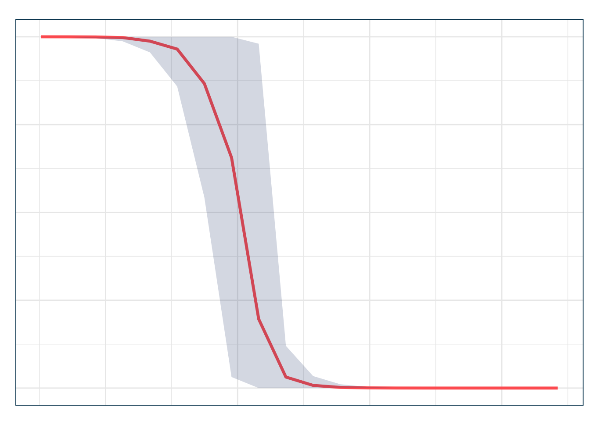
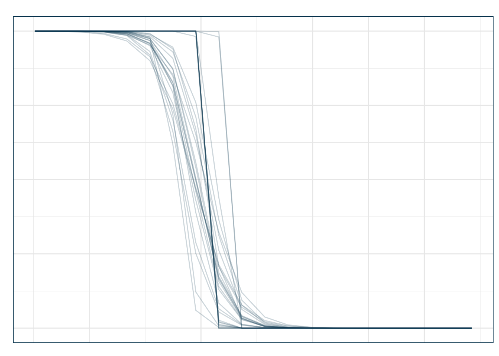

Práctica: Inferencia con Bootstrap en la Regresión Logística
1. El Modelo Logístico
Usaremos la base mtcars para predecir si un automóvil tiene transmisión manual (am = 1). Consideramos dos predictores:
- wt: peso del auto (miles de libras).
- hp: caballos de fuerza.
Code
> data(mtcars)
> mtcars <- as_tibble(mtcars)
>
> logit_model <- glm(am ~ wt + hp, data = mtcars, family = binomial(link = "logit"))
> summary(logit_model)#>
#> Call:
#> glm(formula = am ~ wt + hp, family = binomial(link = "logit"),
#> data = mtcars)
#>
#> Coefficients:
#> Estimate Std. Error z value Pr(>|z|)
#> (Intercept) 18.86630 7.44356 2.535 0.01126 *
#> wt -8.08348 3.06868 -2.634 0.00843 **
#> hp 0.03626 0.01773 2.044 0.04091 *
#> ---
#> Signif. codes: 0 '***' 0.001 '**' 0.01 '*' 0.05 '.' 0.1 ' ' 1
#>
#> (Dispersion parameter for binomial family taken to be 1)
#>
#> Null deviance: 43.230 on 31 degrees of freedom
#> Residual deviance: 10.059 on 29 degrees of freedom
#> AIC: 16.059
#>
#> Number of Fisher Scoring iterations: 82. Bootstrap: Intuición
El bootstrap es un procedimiento que nos permite aproximar la distribución muestral de un estimador sin depender de fórmulas analíticas complicadas. La idea central es simple:
- Partimos de la muestra original, que consideramos una aproximación de la población.
- Generamos nuevas muestras del mismo tamaño seleccionando casos al azar con reemplazo. Estas son nuestras muestras bootstrap.
- Ajustamos el modelo en cada muestra bootstrap y calculamos la cantidad de interés (ej. un coeficiente, un odds ratio, una predicción, etc.).
- La distribución de esas cantidades calculadas a lo largo de muchas muestras bootstrap nos da una estimación de la distribución muestral real. De ahí podemos obtener errores estándar, intervalos de confianza o distribuciones completas.
Este procedimiento es especialmente útil cuando la cantidad de interés es una función complicada de los parámetros del modelo (por ejemplo, predicciones transformadas o promedios en subgrupos) y la inferencia analítica es intractable.
3. Bootstrap para Predicciones Variadas
Queremos estudiar la distribución bootstrap de las predicciones de probabilidad de transmisión manual para varios valores de wt (peso), manteniendo fija la potencia en su media. Esto nos permitirá construir intervalos de confianza para toda una curva de predicción.
Code
> set.seed(123)
>
> # Valores de wt de interés
> wt_vals <- seq(min(mtcars$wt), max(mtcars$wt), length.out = 20)
>
> # Función que ajusta el modelo y devuelve predicciones en la grilla
> bs_preds <- function(split){
+ d <- analysis(split) # extrae la muestra bootstrap
+ m <- glm(am ~ wt + hp, data = d, family = binomial(link = "logit"))
+ newdata <- tibble(wt = wt_vals, hp = mean(mtcars$hp))
+ tibble(wt = wt_vals, pred = predict(m, newdata = newdata, type = "response"))
+ }
>
> # Generar 200 muestras bootstrap
> boots <- bootstraps(mtcars, times = 200, apparent = TRUE)
>
> # Aplicar la función a cada muestra bootstrap y recolectar resultados
> boot_preds <- boots %>%
+ mutate(res = map(splits, bs_preds)) %>%
+ unnest(res)
>
> # Calcular intervalos de confianza punto a punto
> ci_preds <- boot_preds %>%
+ group_by(wt) %>%
+ summarise(
+ ci_low = quantile(pred, 0.025),
+ ci_high = quantile(pred, 0.975),
+ mean_pred = mean(pred)
+ )Explicación del código: - bootstraps(mtcars, times = 200, apparent = TRUE) genera 200 muestras bootstrap y una réplica “aparente” con los datos originales.
- En cada muestra, la función bs_preds ajusta el modelo logístico y calcula predicciones en una grilla de valores de wt.
- Con map() y unnest() recolectamos todas las predicciones bootstrap en un solo data frame.
- Finalmente, usamos quantile() para obtener intervalos al 95% en cada punto de la curva.
4. Visualización de Intervalos de Confianza Bootstrap
Code
> ggplot(ci_preds, aes(x = wt, y = mean_pred)) +
+ geom_line(color = julia$coral, linewidth = 1.2) +
+ geom_ribbon(aes(ymin = ci_low, ymax = ci_high), alpha = 0.2, fill = julia$teal) +
+ labs(
+ title = "Predicción bootstrap de P(am=1)",
+ subtitle = "Curva con intervalos de confianza bootstrap",
+ x = "Peso del vehículo (wt)",
+ y = "Probabilidad de transmisión manual"
+ ) +
+ theme_julia()
En este gráfico: - La línea coral muestra la media de las predicciones bootstrap en cada punto.
- La banda verde corresponde al intervalo de confianza bootstrap al 95%.
- Vemos cómo la incertidumbre es mayor en los extremos de la distribución de wt, donde hay menos datos disponibles.
5. Variante: Curvas de Predicción Múltiples
Otra manera de visualizar el procedimiento es graficar varias curvas bootstrap individuales. Esto ilustra la variabilidad entre replicados y nos da una idea intuitiva de cuán estable es la relación estimada.
Code
> # Seleccionar hasta 30 IDs únicos de bootstrap
> ids <- unique(boot_preds$id)
> ids_sample <- sample(ids, min(30, length(ids)))
>
> # Filtrar solo esas curvas
> sample_curves <- boot_preds %>%
+ filter(id %in% ids_sample)
>
> ggplot(sample_curves, aes(x = wt, y = pred, group = id)) +
+ geom_line(alpha = 0.2, color = julia$navy) +
+ labs(
+ title = "Curvas de predicción bootstrap de P(am=1)",
+ subtitle = "Hasta 30 replicados bootstrap",
+ x = "Peso del vehículo (wt)",
+ y = "Probabilidad de transmisión manual"
+ ) +
+ theme_julia()
Aquí: - Cada línea azul corresponde a una curva de predicción de una muestra bootstrap distinta.
- La dispersión entre curvas refleja la variabilidad de las estimaciones.
- Cuando las curvas están más juntas, hay más certeza; cuando divergen, la incertidumbre es mayor.
6. Conclusión
- El bootstrap se puede aplicar a predicciones transformadas para las cuales la inferencia analítica es complicada.
- Usando
rsample::bootstrapsy predicciones sobre una grilla de valores, obtenemos intervalos de confianza para curvas completas.
- La visualización de intervalos promedio y de curvas individuales son complementarias: la primera es más sintética, la segunda más ilustrativa.
- Este enfoque es clave para comunicar la incertidumbre en modelos no lineales, especialmente en aplicaciones empíricas donde la forma funcional de la relación es compleja.